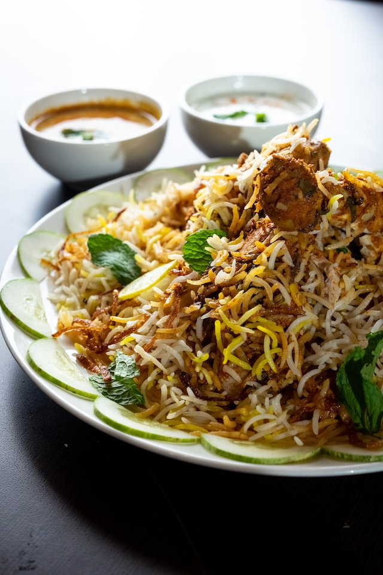

CHICKEN BIRYANI

Description
Hyderabadi chicken biryani is an aromatic, mouth watering and authentic Indian dish with succulent chicken in layers of fluffy rice, fragrant spices and fried onions. It is easier than most recipes while retaining the original taste and presented step by step. Cook like a native but with more ease!
Hyderabadi chicken biryani is really simple to make and packed with flavor which makes it a popular dish to make on joyous occassions.
Ingredients
- 2 cups basmati rice
- 1 kg chicken
- 2 large onions
- 8 tbsp oil
- 3 tbsp ghee
- 1/4 tsp saffron strands in 2 tbsp of milk or a pinch or 2 of orange food color
- 1 and 1/2 cup fresh yogurt
- 2 tbsp ginger-garlic paste
- 1 and 1/2 tbsp red chilli powder
- 1/2 tsp tumeric powder
- 1 tbsp coriander powder
- 1 and 1/2 tsp garam masala powder
- 1 tsp cumin powder
- 2 tbsp lemon juice
- salt to taste
- 4 slit green chillies
- 1 bay leaf, 4-5 cloves, 1 star anise, 4-5 green cardomom pods, 1 black cardomom, 1 tsp caraway seeds(shah-zeera), 3 inch cinnamon stick, few pathar ka phool, 2 strands mace(javitri)
- 2 tbsp freshly chopped mint leaves and coriander leaves
Steps
- Wash the chicken thoroughly and keep it aside
- Slice the onions finely and fry them until they turn light golden-brown, remove and let them air-dry
- In a bowl, Add the chicken, yogurt, ginger-garlic paste, red chilli powder, tumeric powder, coriander powder, garam masala powder, cumin powder, salt, and the fried onions(save some for garnishing). Mix well and keep it aside
- In a vessel, Add the rice and wash it thoroughly. fill it with 8 glasses of water and add bay leaf, cloves, star anise, green cardomom pods, black cardomom, caraway seeds, cinnamon stick, pathar ka phool, mace, green chillies, coriander and mint leaves, 2 tbsp oil and 1/2 tsp salt
- In another vessel, add 6 tbsp oil and transfer the chicken mix
- Boil the rice until it is partially cooked ,reduce the flame to low and start straining the rice and arranging it on top of the chicken then garnish it with the remaining fried onions, lemon juice and saffron milk
- Wrap the vessel top with foil and put on the lid
- Start to cook the dish starting at 10 mins on high flame, then transferring the vessel on a tava and allowing it to cook for 15 mins on medium heat, then 10-15 mins on low heat
- Check if the rice is cooked completely, if not keep on low flame for another 5-10 mins
- Serve hot and enjoy